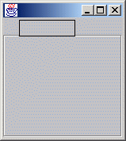
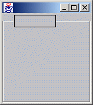
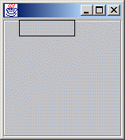

|
||||||||||
| PREV CLASS NEXT CLASS | FRAMES NO FRAMES | |||||||||
| SUMMARY: INNER | FIELD | CONSTR | METHOD | DETAIL: FIELD | CONSTR | METHOD | |||||||||
java.lang.Object
|
+--org.zaval.util.ValidationObject
|
+--org.zaval.lw.LwView
|
+--org.zaval.lw.LwBorder
|
+--org.zaval.lw.LwTitledBorder
This class inherits LwBorder class to support a title area for the border view. The view using the title bounds and alignment that are provided with an owner component, paints the border with a break (title area). To use the title border view it is necessary to do following steps:
...
LwComponent c = LwTitleInfoComponent();
c.getViewMan(true).setBorder(new LwTitledBorder(LwBorder.ETCHED));
...
The view has line alignment propety that defines border line alignment relatively the
title area and can have following values: Alignment.TOP, Alignment.BOTTOM, Alignment.CENTER.
The next samples illustrate the property usage:
| Property value | Result application | |||||||||
| Alignment.BOTTOM |  | |||||||||
| Alignment.CENTER |  | |||||||||
| Alignment.TOP |  | |||||||||
| Fields inherited from class org.zaval.lw.LwBorder |
DOT, ETCHED, PLAIN, RAISED, SUNKEN, SUNKEN2 |
| Fields inherited from class org.zaval.lw.LwView |
MOSAIC, ORIGINAL, STRETCH |
| Fields inherited from class org.zaval.util.ValidationObject |
isValidFlag |
| Constructor Summary | |
LwTitledBorder(int type)
Constructs the border view with the specified border type. |
|
LwTitledBorder(int type,
int a)
Constructs the border view with the specified border type and the line alignment. |
|
| Method Summary | |
void |
paint(java.awt.Graphics g,
int x,
int y,
int w,
int h,
Drawable d)
Paints the view using a given width and height. |
| Methods inherited from class org.zaval.lw.LwBorder |
bottomLine, calcPreferredSize, getBorderType, getInsets, leftLine, rightLine, topLine |
| Methods inherited from class org.zaval.lw.LwView |
getPreferredSize, getType, ownerChanged, paint, recalc, setType |
| Methods inherited from class org.zaval.util.ValidationObject |
invalidate, isValid, validate |
| Methods inherited from class java.lang.Object |
clone, equals, finalize, getClass, hashCode, notify, notifyAll, toString, wait, wait, wait |
| Constructor Detail |
public LwTitledBorder(int type)
type
public LwTitledBorder(int type,
int a)
typea| Method Detail |
public void paint(java.awt.Graphics g,
int x,
int y,
int w,
int h,
Drawable d)
x and y
coordinates.gxywhd
|
||||||||||
| PREV CLASS NEXT CLASS | FRAMES NO FRAMES | |||||||||
| SUMMARY: INNER | FIELD | CONSTR | METHOD | DETAIL: FIELD | CONSTR | METHOD | |||||||||